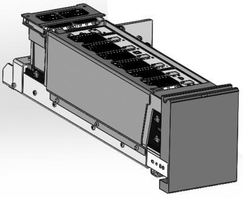

Fusion Fluids Drawer General Information

The Fusion Fluids Drawer is comprised of a large fluid drawer tub and an elution buffer transfer mechanism. The fluid drawer tub has capacity to hold six (6) fluid packs: two (2) locations for Fusion Oil fluid packs, and four (4) locations for Reconstitution Buffer fluid packs. The elution buffer transfer mechanism has a tub with capacity for two (2) Elution Buffer fluid packs.
In the closed position, a single clear plastic cover sits above the fluid packs in the fluid drawer tub. A separate plastic cover attached to the elution buffer transfer mechanism covers the Elution Buffer fluid packs. The covers prevent the fluid packs from being pulled from their positions within the tubs when a pipette tip pierces the fluid packs and then is removed by the pipettors.
The fluid drawer tub and elution buffer tub of the Fusion Fluids Drawer only allow for the fluid packs to be loaded in one orientation. All fluid packs are identified by RFID, and information from the fluid packs is read by the antennas on the RFID PCBs within the fluid drawer tub. The fluid drawer tub has an indicator panel with red and green LEDs to indicate fluid pack status for all eight (8) fluid pack locations.
The elution buffer tub of the Fusion Fluids Drawer is housed in the elution buffer transfer mechanism that moves the elution buffer fluid packs from the Fusion into the upper bay of Panther, behind the Reagent Bay, in an area accessible by the Panther Reagent pipettor. A sheet metal separating panel is installed below the location of the elution buffer transfer mechanism in Panther to ensure that clearance is maintained between the elution buffer tub and the Panther Reagent Bay cooling fluid lines.
The Fusion Fluids Drawer can be opened and closed by the user. With the Fusion Fluids Drawer open, the user may load Fusion Oil, Reconstitution Buffer, and Elution Buffer fluid packs into the corresponding locations within the fluids drawer tub and elution buffer tub. The fluid packs can only be loaded in one direction. The Fusion Fluids Drawer will read the RFID information on the labels of the fluid packs and show status of all fluid pack locations on the indicator panel.
The elution buffer tub is designed to be retained to the Fusion Fluids Drawer when the drawer is not in its closed position. With the Fusion Fluids Drawer closed, the elution buffer tub is released from its position within the Fusion Fluids drawer and is transferred to Panther by the elution buffer transfer mechanism. The Elution Buffer fluid packs can then be accessed by the Panther Reagent Pipettor. The Fusion Oil fluid packs and Reconstitution Buffer fluid packs can be accessed by the Fusion Pipettor from their location within the Fusion.
 button at the top of the page to send feedback, comments, or change requests.
button at the top of the page to send feedback, comments, or change requests.